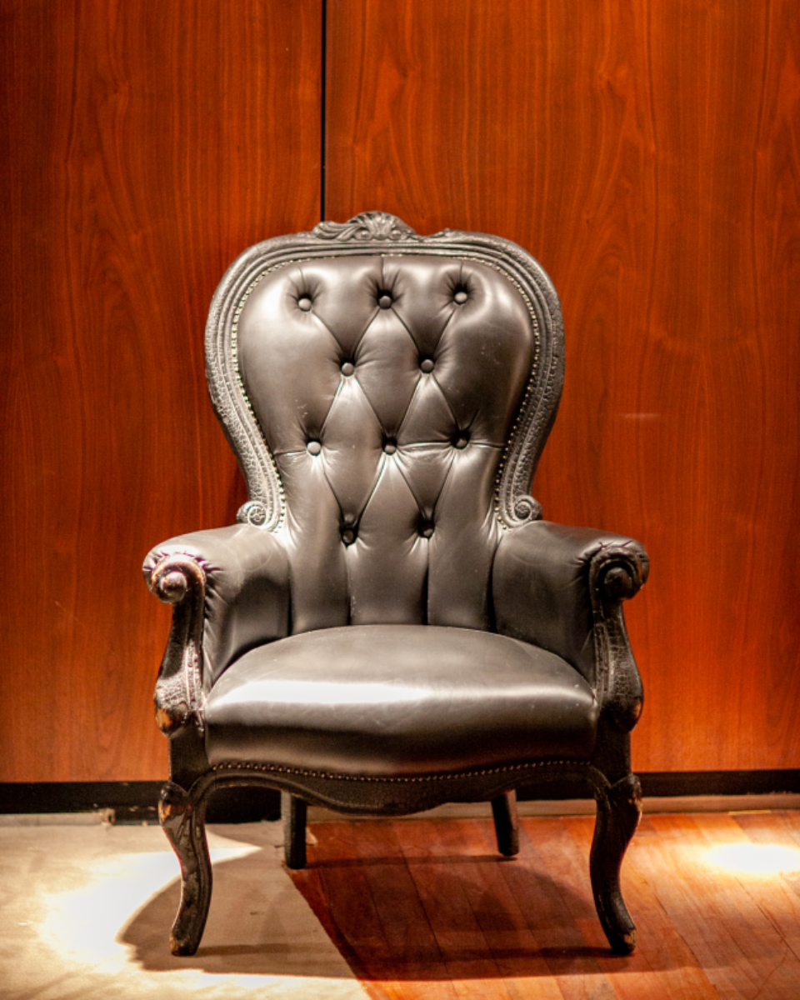

The building blocks.
A visual reference for the supported editorial blocks. These static examples guide the production rendering.
Good stories need room to breathe.
A clear typographic rhythm makes space for the ideas on the page. This is the standard paragraph style for long-form editorial content.
A closer look
- Start with a question worth exploring.
- Follow the details that surprise you.
- Leave room for a different perspective.
- Observe the familiar.
- Consider a new angle.



“Attention is the beginning of a different kind of discovery.”
const journal = {
perspective: 'open',
pace: 'considered',
curiosity: true
};| Perspective | What we explore |
|---|---|
| Design | Spaces, objects, and everyday life |
| Nature | Our connection to the world outside |
One perspective.
A place to begin a thought and follow it somewhere new.
Another possibility.
Two related ideas, side by side, with room for each to breathe.
A connected thought.
A grouped collection of content with a shared background.